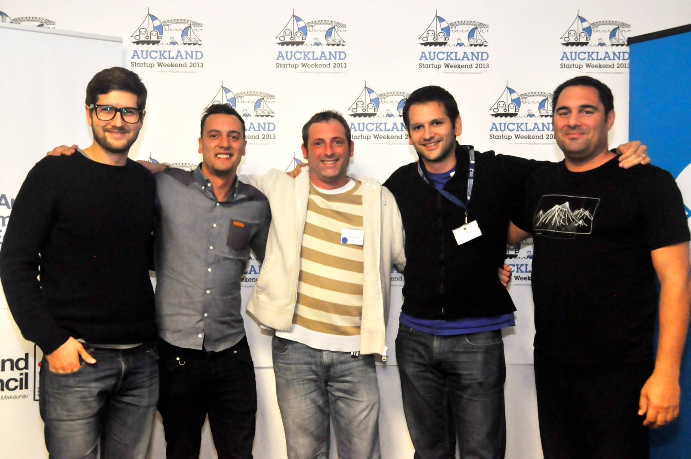

This past weekend I entered the Auckland Startup Weekend. It was an excellent experience and I wanted to share it here, because if you have an opportunity to do a start-up weekend, in Auckland or anywhere else, you should – you will not regret it.
The whole event would make an interesting social experiment, as complete strangers are thrust together around a half-baked idea and given 50-something hours to turn it into a pitch-able, feasible business. I’m going to share my experience of the weekend here, so if you’re interested in what a Startup Weekend is like, and what happens, read on…
Spoiler alert: we won the event with our business ArriveSupplied.
Here’s the team of dashing young lads behind the winning bid.

Me, Tom, Graeme, Oliver and Gerald – The Arrive Supplied team. Photos by Janine Barr
On the opening night I pitched my idea, which was pre-paid, pre-registered, ready to use sim cards waiting for you at your hotel when you arrive in a new country. The idea gathered reasonable support and our team started with 8 people. Over the course of the next 3-4 hours as the idea ebbed and flowed, it expanded to include other things travellers might want when they land, for business, or even for pleasure.
In the process we lost 4 members, deciding I think, that we were wandering aimlessly and lacked direction – which was pretty accurate. Late that night though, we’d firmly settled on the idea, and began to map out the business model, logistics and customer validation approach.
There’s a social/teamwork aspect to the event that’s not easy to quantify, everyone brings their own areas of expertise, leadership styles and thoughts on how the business idea can actually work. Our team definitely had it’s fair share of tensions on key points, but I think the ability for us to work through the issues and come to consensus was a real strength, as the 37 Signals folks say in their book, Rework, if everyone is too polite, you end up with the strangers at a cocktail party scenario, no one willing to stir things up and thrash out ideas.
The whole weekend is a psycological roller coaster, with the mental exhaustion, and constant nagging feeling that your idea is not good, or the business model is flawed. I’m sure everyone in the team had doubts, or wanted to quit at one stage. Periodically the mentors will stop by and spend some time with your team, asking questions and provoking some analysis of the various aspects of your business idea.
Mid-way through Saturday, Rowan Yeoman stopped by and asked us questions of our validation techniques and customer problem, that we just didn’t have good answers for. The perceived problem we were solving suddenly looked pretty flimsy, we had no real evidence to support customer demand, or channel partner opportunities we relied on for growth in our modelling.
This was a real low point for me, it felt like our previous 1.5 days of work was undone. We all marched off to interview concierge managers in the CBD in the hope of some validation, and came back with mixed results, thankfully though the positive results outweighed the negative, and we pushed ahead with the idea.
It was about this time I got my real aha moment of the weekend, in terms of business modelling and customer validation. Often times I sit and hack away on some website idea for a whole weekend, only to get to the end and realize I have no way to sell it, no way to grow it, and no real evidence there are even customers for it. The simple skills and methods we were taught to use for validating the demand, and channels to sell a product or service, to plan the growth and model the financials of a business, are truly invaluable for an engineer – if you’re a weekend hacker, I cannot recommend this enough. The best tool was the Lean Canvas, a simple, usable tool for business planning and validation.
During the weekend we put together a quick-and-dirty implementation of the idea, using WooCommerce on WordPress. Another situation where the complexity of Magento would have done us no favors, we wanted points for execution, not scalability!

The whole weekend culminated in the pitching session starting Sunday evening. Most of Sunday had been spent iteratively improving our 5 minute pitch, under the helpful coaching of Phil Williams of The BizDojo. The process of boiling a a whole weekends worth of ideas, logistics planning, financial modelling, customer validation and technical execution into 5 minutes is not easy, but by the time tools-down was called, we had a slick set of slides and a solid pitch that covered all the key areas that we’d be judged on.
The actual pitching time went quickly, and mostly to plan, except for a mix up at the start of our presentation over timing – I think we managed to smooth over it pretty well though. The judges were experienced business leaders; Lance ‘why do people give gifts?’ Wiggs, Candace Kinser, Alexei Dunayev and Dave Moskovitz. We had to answer their questions for a further 5 minutes, and our preparation earlier paid off as we were ready with details of the financial model, growth and scaling plans and customer validation techniques.

With the pitching over and the judges continuing their deliberations behind closed doors, the keg was rolled out. Everyone was able to breath a sigh of relief and relax and mingle with the other teams over a craft beer.
The announcement that we won was a real surprise, we were all stoked with the result of our hard work, not to mention the prizes from the sponsors ($10,000 worth of TradeMe ads, $1000’s worth of accounting and project management software, co-working space, and loads more). The mentors and organisers put in a huge effort to keep everyone fed, watered, motivated and educated throughout the weekend. I’m very grateful for their efforts and hope one day I’ll be sufficiently qualified to contribute back to the event.
Now the weekend has passed, and the buzz has subsided, the reality of the situation becomes apparent. 54 hours is really just the tip of the iceberg, there’s no such thing as an overnight success and if ArriveSupplied is to become the business we planned it to be, many 100’s of hours work will be required. Startup Weekend got us to the start line, but the race is only just beginning.
Good on ya Ash, let’s know if you need a good supply of snorkels & masks for the beach box! lol 😀
Great piece Ashley! For some odd reason the link is broken to connect with the photographer, which would be me (I’ll get on to that shortly!). In the meantime, people can connect with me here: genratec.com/jbarr
Wow Ashley, Very well written and even though I was there in the middle of it, your account is stirring. So glad to know the experience was valuable for you both practically and personally.
Cheers!
This is great Ashley, a true account of what Startup Weekend is all about! Glad you had this experience. In many ways Startup Weekend changed my life…it’s a butterfly affect kinda thing 🙂
Great write up on the weekend and well done again on winning the event. Was great to see how the idea transformed as the weekend went on.
Good luck with moving forward with the idea.
Well done winning it! They are great events and I too highly recommend them. I went to Yahoo Hack Day, not sure they still do them, in London. Slightly less Startup, bit more Tech Idea focussed but similar nonetheless. You rock up, are quickly forced in to building a team with a good spread of skills, brainstorm ideas and execute.
It was held in Alexandra Palace, a very nice location on top of a hill. You can picture it, 300 geeks with expensive tech gear sprawling all over the place. Highlight of the event was a thunderstorm, lightning struck the building, messed up the security systems and the building thought it was on fire so it automatically opened up the roof. Yes, during a tropical downpour with 300 laptops under said roof. Should have seen the mass scramble 🙂
We actually got to sleep there (what few hours you can spare if you prioritise finishing your project) and beer and pizza were provided too. Also culminated in a brief pitch and awards (we sucked) but all in all you learn a lot, especially if you’re used to interacting through forums instead of face to face and have never been under extreme time pressure to deliver a project.
My advice: don’t be scared to go. Even if you are not a programming legend, design guru, sysadmin ninja or seasoned business person, there’s bound to be something you can bring to the table for your group. Just quickly grow some balls and give it your best shot as you’d be an idiot if you walk away at the end not having learned a thing!